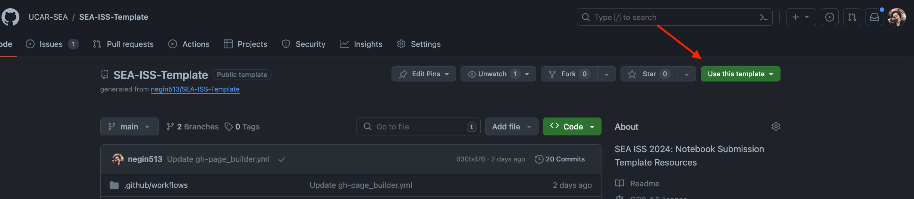

SEA ISS 2024 Notebook Submission Template 📓
How to Use This Template 🛠️
Estimated submission time: 30 minutes
Create your Paper Repository
Create a New Repository Using this Template: Click on the “Use this template” button to create a new repository with the files from this template.

Environment Setup: Update the
environment.ymlfile and add any additional packages you may require.Paper Information: Fill in the details of your paper in this
README.md, including the title, authors, abstract, and other relevant acknowledgements.Add your Paper: Add your paper as a Jupyter Notebook in the
notebooksfolder. You can use multiple notebooks or one notebook if you wish. You can also use markdown files if you prefer.
notebooks/
|── introduction.md
├── notebook1.ipynb
└── notebook2.ipynb
Update the Table of Contents: Update the
toc.ymlfile to include the notebooks you’ve added.Remove Instructions: Once you’ve set up your repository, delete these instructions.
Commit your changes: Commit and push your changes to your repository.
Check your Jupyter Book: Once you’ve pushed your changes, check that your Jupyter Book is building correctly. You can check the status of your Jupyter Book by clicking on the “Actions” tab of your repository.
Ready to Submit your Paper? 📝
Submit your Paper : Once you’ve completed the steps above, you can submit your paper to the conference organizers:
Once you are ready to submit your paper, go to the “Issues” tab of this repository and click “New Issue”.
Someone from the SEA committee will add your github username to the list of collaborators for the UCAR-SEA github organization.
Once you accepted the invitation, you can transfer your repository to the UCAR-SEA organization.
Navigate to the settings of your paper repository, scroll down to the Danger Zone, and click “Transfer” .
Select or type “UCAR-SEA” to transfer the repository to the conference organizers. This step will make your paper public and allow the conference organizers to review your paper.
You can submit your paper as one notebook or split it up to multiple notebooks and markdown files. Please see the example paper1 and example paper2 for examples of how to structure your paper.
For your submissions, please use the following naming convention for your paper repository: SEA-ISS-2024-<paper-title>. For example, if your paper title is “My Awesome Paper”, your repository name should be SEA-ISS-2024-My-Awesome-Paper.
For your submissions, please remove everything above this line and fill in the details of your paper here:

This repository contains a template for submitting your paper to the 2024 Software Engineering Assembly Conference.
Please see the how to use this template page for instructions on how to use this template.